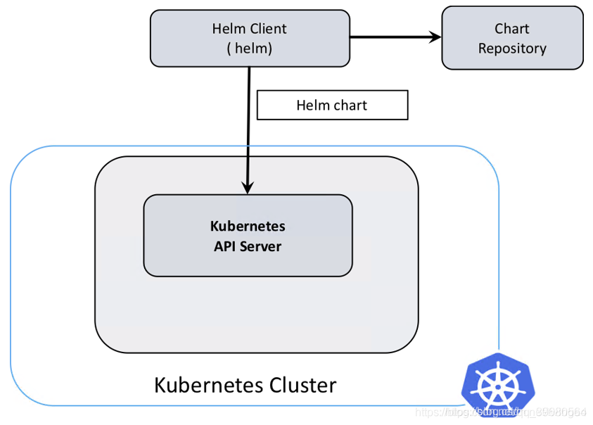
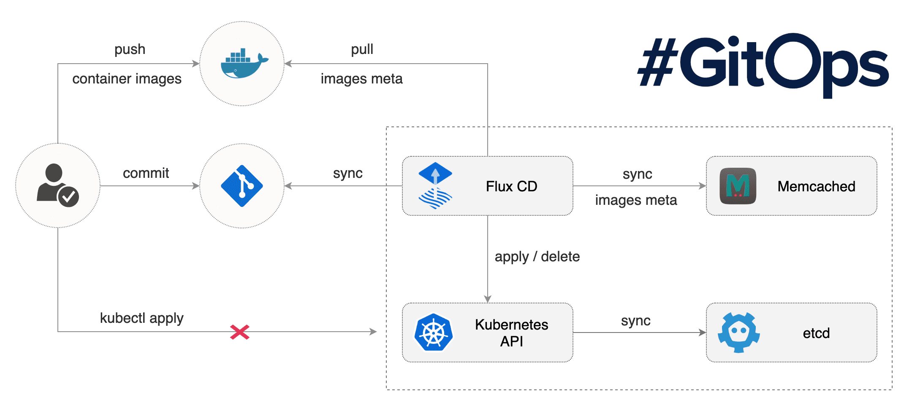
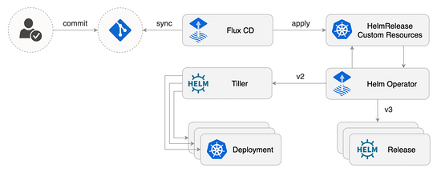

class: center, middle
# .red[Shipping]
.left.footnote[Harry]
---
class: center, middle
Start with a joke?
---
class: center, middle
Start with a joke?
something different..
---
class: center, middle
## Happy Weekend
## 周末快乐
## zhou mo kuai le
## Drummer Kwai La
---
# Content
- What do we ship?
- How do we ship?
- Why is it not perfect?
---
# What do we ship?
- docker images
- use Git hashes for image tags
---
# How do we run the docker images?
- command args
- resource requests/limits for memory/CPU
- configs
- associated storage
- environment variables
- ...
---
# What do we ship?
- Kubernetes deployments/statefulsets
- Kubernetes configmaps/secrets
- `docker pull/create/rename/stop/start` by crane
- take care of docker volumes
---
# Native k8s YAML file
- hard to write
- redundant
- no objects management
---
# What do we ship? - Kubernetes
- Helm charts
- templating (e.g. `hanson-generic` chart)
- manage k8s objects
---
# Helm

---
# What do we ship? - Kubernetes
- Flux
- continuous delivery solution for Kubernetes
- GitOps
- we use it with `helm-operator`
---
# Flux

---
# Flux with helm

---
# What do we ship? - Crane
- docker images
- config
- production_config -> `/etc/hanson_cfg`
- other host provisioning
- db migrations
---
# How do we ship?
- k8s, `deploy_apps`
- clone production_config
- generate HelmRelease custom resources YAMLs
- push to k8s_flux_production/etl/ci/staging
- snowflake hosts, `crane`
---
# How do we ship? - k8s
```bash
# ship scenarios
deploy_apps charts -s shards -v {gitsha}
deploy_apps charts -s config -v whatever
# ship individual apps
deploy_apps charts -a smarkets-maker -v {gitsha} -c production
deploy_apps charts -a hanson-cfg-configmap -v whatever -c production
# ship unmerged yaml changes
deploy_apps charts -a smarkets-maker -v {gitsha} -c production --apps-dir `pwd`/k8s
# prerelease
deploy_apps charts -a smarkets-maker -v {gitsha} -c production --prerelease
deploy_apps charts -a smarkets-maker -v {gitsha} -c production --un-prerelease
# partition
deploy_apps charts -a smarkets-maker -v {gitsha} -c production --partition 0.5
deploy_apps charts -a smarkets-maker -v {gitsha} -c production --partition 1.0
```
---
# How do we ship? - k8s
production_config, apps defination YAML
```bash
name: {application name}
chart: {helm chart name}
chart_version: {helm_chart_version}
chart_repo: {helm_chart_repo}
description: {short human readable app description}
version: {not used}
namespace: {k8s namespace}
cluster: {k8s cluster name}
check_health: {check health flag}
health_endpoints:
- {http/tcp endpoints list}
values:
{helm_chart_values}
```
---
# How do we ship? - k8s
deploy_apps built-in variables templating
- tag: ${version}
- deployid: ${deployid}
- name: ${appname}
- takes `smarkets-broker` from `smarkets-broker-1.yaml`
- `bin/smarkets-broker --shard-number ${shard_id}`
- takes `1` from `smarkets-broker-1.yaml`
---
# How do we ship? - crane
crane is based on fabric,
which is a simple package for building configuration management tool.
crane is just a tool providing CLI to python functions.
---
# How do we ship? - crane
```
# ship all (ship_code will automatically check if there are db migrations)
crane production:core hanson.ship_code:{gitsha}
# ship config (/etc/hanson_cfg)
crane production:core hanson.ship_config:{gitsha}
# db migration
crane dev:local db.migrate_hanson:{gitsha}
```
---
# Why is it not perfect?
- everyone run tools locally
- different environments
- need to distribute the tools
- error handling is not good
- not easy to ship applications in some orders
- follow dependencies
---
# Why is it not perfect? -
- applications are too implicit
- not application-oriented, informations are spread everywhere
- not easy to do continuous deployment
- not easy to hook with other systems
- during our ship, some alerts should be scheduled down
---
class: center middle
## Thank you!
---
class: center middle
## Questions?
---
name: last-page
class: center, middle
## Happy Weekend
## 周末快乐
## zhou mo kuai le
## Drummer Kwai La